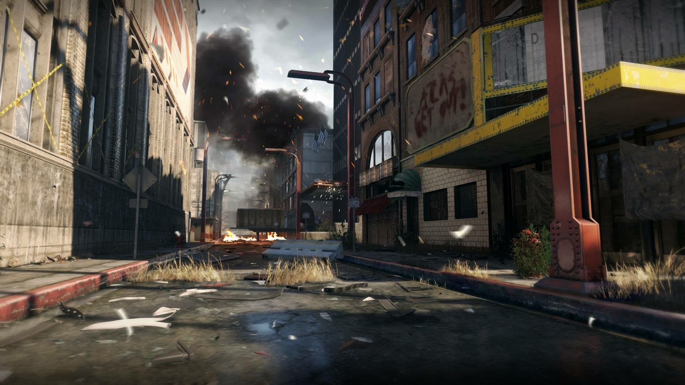

Tracking down KVA Lieutenant
Four years later, the world has recovered from the attacks with the help of Atlas, which has provided aid and shelter to everyone affected and has now become the largest corporation in the world, effectively controlling a majority of the world's resources. Now one of Atlas' most elite operatives, Mitchell is deployed in Detroit along with Gideon and Joker to track down a KVA lieutenant, Dr. Pierre Danois, who has information on the whereabouts of Hades. Joined by fellow Atlas Operative Torres, the Team use hover bikes to track down Danois at his last known location, a hospital in the ruins of Detroit, where they discover the bodies of several Atlas field scientists with their hazmat suits missing. Realizing that they've been working in disguise, Mitchell and Gideon proceed towards their target until Mitchell loses his footing on an unstable ledge, falling to the lower levels of the ruins and losing his weapon in the process. He is eventually able to regroup with Gideon and the team and track down Danois successfully. While extracting him, the team are sidetracked by a KVA ambush and are nearly killed until a group of cloaked soldiers intervenes and saves them. Telling the team that they will cover their escape, the soldiers' leader tells them to move until he is stopped by Gideon, who demands to know who the soldiers are. The leader simply retorts that it's classified and moves on. The team then manages to reach the Atlas Base on their bikes despite being pursued by KVA forces.